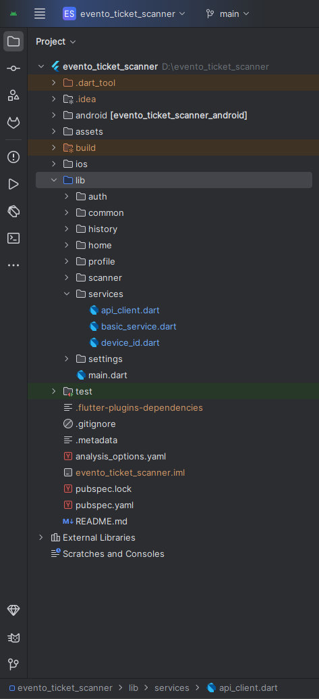
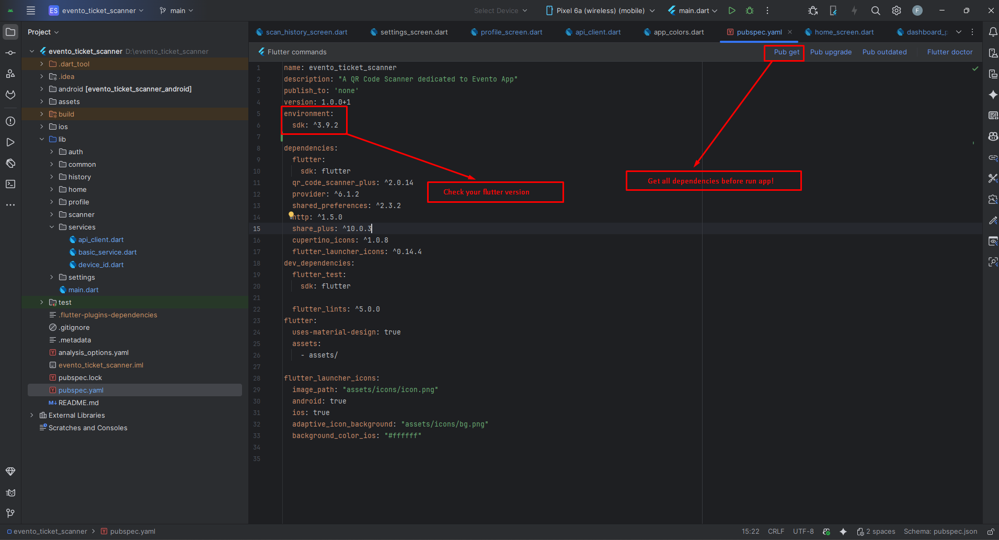
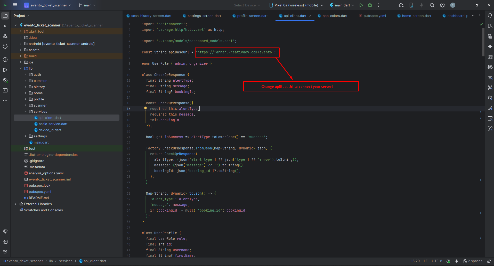
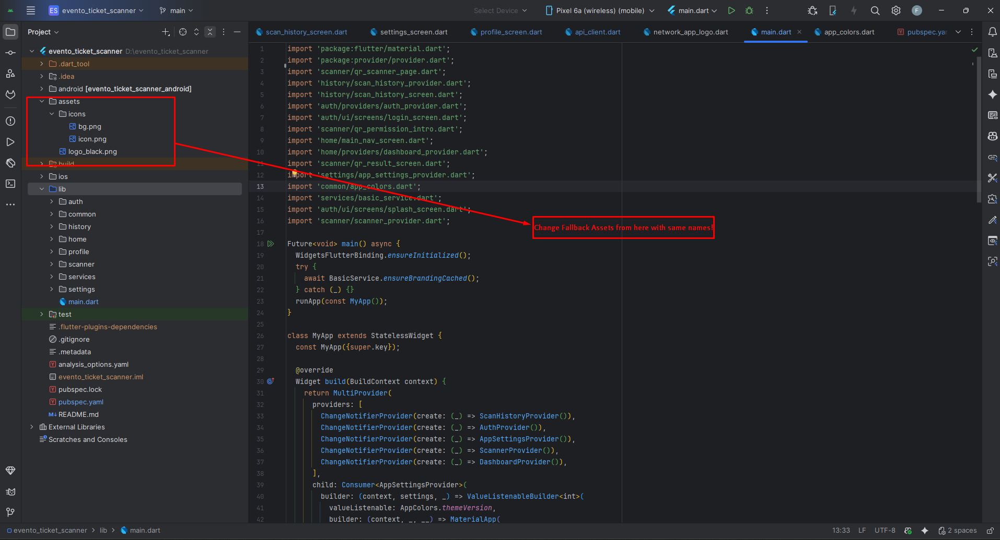
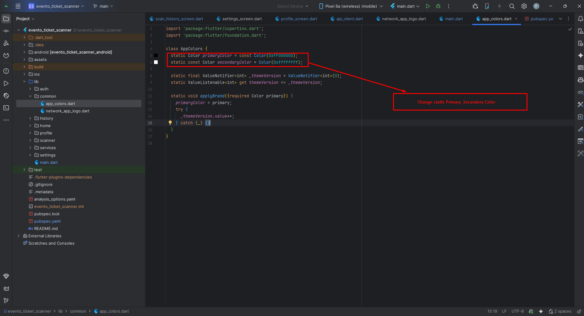
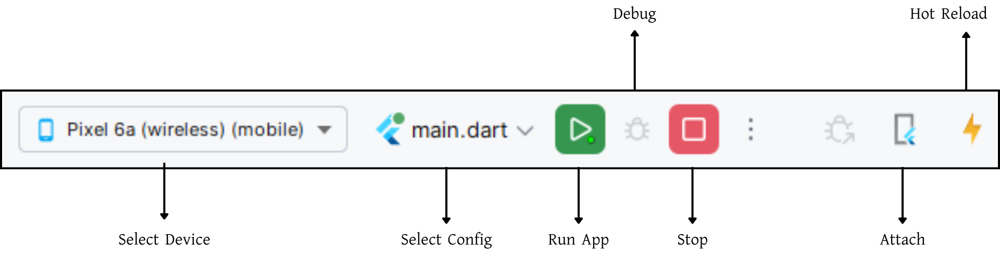

Evento Ticket Scanner - Mobile Ticket Verification App
Evento Ticket Scanner is a lightweight, secure, and fast ticket scanning app designed for event organizers and on-site staff to verify tickets, manage attendee check-ins, and get real-time dashboard insights — all from a mobile device. Built with reliability and simplicity in mind, Evento connects to your Evento backend to fetch event and ticket details and ensures the scanning flow is smooth even in high-throughput environments.
Key Features
- Fast and Accurate QR Scanning: Uses a robust QR scanning engine with careful camera lifecycle control to avoid duplicate reads. Scanner is activated only on the scanner screen to reduce background camera usage and battery drain.
- Real-Time Verification with Server Integration: Scanned tickets are validated against your Evento backend. The app posts booking IDs to the appropriate admin/organizer endpoint and shows verification status and messages instantly.
- Stylish, Informative Dashboard: Home screen shows running and upcoming events, current counters for events and tickets, and a countdown for live events. Dashboard data is cached for offline viewing and refreshed after authentication.
- Detailed Scan Result & History: Each scan opens a result screen showing verification feedback. Scan history stores booking codes with timestamps and event context — including event title and optional thumbnail image.
- Robust Camera Control & Stability: QR view is rendered only when needed; camera pause/resume is handled safely to avoid exceptions and duplicate detections.
- Configurable App Settings: Theme selection (System / Light / Dark) is persisted across launches. Vibration-on-scan toggle is available for tactile confirmation. Branding colors are applied dynamically when provided by the backend.
- Role-Based Endpoints: The app supports both admin and organizer roles, routing verification and other API calls to the correct server endpoints depending on the authenticated user.
How It Works
- Sign in with your Evento organizer or admin credentials.
- The Dashboard loads active events and tickets from the server.
- Open the Scanner tab — the camera is initialized and scanning begins.
- Scan a QR code printed on a ticket. The app extracts the booking id and sends it to the backend for verification.
- On a successful check, the app displays a verification payload and saves the scan to local history, recording the event context.
- Use the History tab to review or copy past scans and to clear or delete individual entries.
Technical Details
- Flutter-based cross-platform mobile app (Android & iOS).
- Uses
qr_code_scanner_plusfor robust barcode scanning. Providerfor state management andSharedPreferencesfor persistent local storage.- Backend integration via a lightweight ApiClient; supports JSON parsing and graceful fallback for network errors.
- Material 3 UI patterns with theming, custom cards, and animations.
Who Is This For?
- Event organizers managing single or multi-day events.
- Entry staff who need a fast, offline-capable ticket verification tool.
- Teams who want a simple and robust scanning interface integrated with Evento backend services.
Built for reliability and ease of use, Evento Ticket Scanner ensures smooth check-ins and real-time insights with minimal setup and maximum performance.
Folder Structure
All you need to follow the lib(Library) Folder for any logical and UI changes in this project.
lib # Root directory for all Dart source code.
├── main.dart # App entry point
├── auth # Authentication: login and user management.
│ └── providers # Authentication state providers.
├── common # Shared components across features.
│ ├── app_colors.dart # Brand color definitions
│ └── network_app_logo.dart # Network-fetched logo widget
├── history # Scan history tracking.
│ ├── scan_history_provider.dart # History state management
│ └── scan_history_screen.dart # History list UI
├── home # Dashboard, event stats, and ticket management.
│ ├── models
│ │ └── dashboard_models.dart # Event and ticket data models
│ ├── providers
│ │ └── dashboard_provider.dart # Dashboard state management
│ ├── home_screen.dart # Main dashboard UI
│ └── main_nav_screen.dart # Bottom navigation container
├── profile # User profile and logout.
│ └── profile_screen.dart # Profile UI
├── scanner # QR code scanning and verification.
│ ├── qr_scanner_page.dart # Scanner UI with camera
│ ├── qr_result_screen.dart # Scan result display
│ └── scanner_provider.dart # Scanner state management
├── services # Network communication and API services.
│ ├── api_client.dart # Backend API integration
│ ├── basic_service.dart # Branding and config fetching
│ └── device_id.dart # Device ID generation
└── settings # App settings and preferences.
├── app_settings_provider.dart # Settings state management
└── settings_screen.dart # Settings UI

Screens
App Screens:
1. Splash Screen - Initial loading screen
2. Login Screen - User authentication
3. Home Screen - Dashboard with events and ticket stats
4. QR Scanner Screen - Camera-based ticket scanning
5. QR Result Screen - Scan verification result display
6. Profile Screen - User profile and logout
7. Settings Screen - App preferences (theme, vibration)
8. Scan History Screen - List of all scanned tickets
9. Main Navigation Screen - Bottom navigation container (Home/Scanner/Profile tabs)
Requirements
Download and install Any one from these IDE(Android studio, Vs Code) on your computer.
- Source Android Studio: https://developer.android.com/studio
- Source Android Studio: https://code.visualstudio.com/download
Setup Flutter and Dart SDK in your computer if you want to modify the source code
- Source Android Studio: https://docs.flutter.dev/get-started/install
Must installed Flutter and dart plugin on your IDE
Install Flutter on Windows
Install Flutter on Mac
Installation
After downloading file from CodeCanyon you will get a zip file. Extracting the zip file you will get Documentation Folder and ... installable.zip included in there:
- Unzip the source code and open it in your IDE.
- On your IDE find for pubspecs.yaml file then click on pub get on top right side your IDE.
- Please make sure you are using Flutter version minimum 3.30.0
- Open an emulator or connect a real device and then click on Run Button for compile the project.

Flutter Packages
The app uses the following Flutter packages as defined in pubspec.yaml:
Core Dependencies
📁 qr_code_scanner_plus: ^2.0.14 >> QR code scanning with camera integration
📁 provider: ^6.1.2 >> State management solution
📁 shared_preferences: ^2.3.2 >> Persistent key-value storage for settings and history
📁 http: ^1.5.0 >> HTTP requests and API calls to Evento backend
📁 share_plus: ^10.0.3 >> Share scan results and booking codes
📁 cupertino_icons: ^1.0.8 >> iOS-style icons (Cupertino widgets)
Dev Dependencies
📁 flutter_launcher_icons: ^0.14.4 >> Configure app launcher icons for Android & iOS
📁 flutter_lints: ^5.0.0 >> Recommended lints for Flutter projects
Setup Application
Change App Name
The app name is currently set to "Evento Scanner". To change it:
1. Update pubspec.yaml
name: evento_ticket_scanner description: "A QR Code Scanner dedicated to Evento App"
Change the name and description fields to your desired values.
2. Android
- Open
<project>/android/app/src/main/AndroidManifest.xml - Update the
android:labelvalue inside the<application>tag:
<application
android:label="Evento Scanner"
android:icon="@mipmap/ic_launcher">
</application>
3. iOS
- Open
<project>/ios/Runner/Info.plist - Change
CFBundleNameandCFBundleDisplayName:
<key>CFBundleName</key> <string>Evento Ticket Scanner</string> <key>CFBundleDisplayName</key> <string>Evento Scanner</string>
4. Reinstall after rename
- Uninstall the previously installed app from the device/emulator, then rebuild and run.
- Optional (Android): uninstall via package id:
Change App Launcher Icons
The app uses flutter_launcher_icons package to generate launcher icons. The configuration is
already set in pubspec.yaml:
flutter_launcher_icons:
image_path: "assets/icons/icon.png"
android: true
ios: true
adaptive_icon_background: "assets/icons/bg.png"
background_color_ios: "#ffffff"
Steps to Change Icons:
- Prepare your icon images:
assets/icons/icon.png- Main icon (1024x1024 recommended, square)assets/icons/bg.png- Background for Android adaptive icon (solid color or simple pattern)
- Replace the existing files: Place your custom icon files in the
assets/icons/directory, replacing the default ones. - Generate icons: Run the following command in your project root:
- Rebuild the app: Uninstall the old app from your device/emulator, then rebuild and run. If icons don't update, clean the build:
Icon Guidelines
- Android: Uses adaptive icons with foreground and background layers. The foreground (icon.png) should have padding around the main logo to avoid clipping on different device shapes.
- iOS: Uses a single icon (icon.png) with rounded corners applied automatically. The background_color_ios sets the background color for iOS icons.
- Best practice: Use a simple, recognizable logo centered in the icon with transparent or solid background.
Change API URL
- Open
lib/services/api_client.dart - Update the apiBaseUrl constant to your server URL (no trailing slash):
const String apiBaseUrl = 'https://ecample.com'; -> No / trailing slash
- Do not add a trailing
/toapiBaseUrl(it's appended inapiBaseUrl). - If your API path is different (e.g.,
/v1), adjustapiBaseUrlaccordingly. - After changing the URL, restart the app. If you still see old data, clear app storage or log out to refresh tokens.

App Logo & Branding
The Evento Ticket Scanner app dynamically fetches branding (logo, favicon, primary color) from your Evento backend at runtime. No hardcoded logos in the app code—everything is managed via the Admin Panel.
How Branding Works
1. Dynamic Branding (Recommended)
- Logo, Favicon, Primary Color: Fetched from the backend API
(
/api/branding) and cached for 30 minutes. - Where it's used:
- App Bar logo:
NetworkAppLogowidget (innetwork_app_logo.dart) - Primary theme color: Applied via
AppColors.applyBrand()inapp_colors.dart - Favicon: Cached but not currently displayed in the app
- App Bar logo:
- Cache keys: Stored in
SharedPreferences:branding_logo_bytes_v1,branding_logo_url_v1branding_fav_bytes_v1,branding_fav_url_v1branding_primary_hex_v1
2. Static Fallback Assets (Optional)
If the network is unavailable or branding fetch fails, the app falls back to:
- Logo:
assets/logo_black.png - Launcher Icon:
assets/icons/icon.png - Adaptive Icon Background:
assets/icons/bg.png
Updating Branding
Option A: Admin Panel (Recommended)
- Upload new logo, favicon, and set primary color in the Evento Admin Panel (branding settings).
- The app will automatically fetch and cache the new branding on next launch (or after 30 minutes).
- Force refresh: Users can restart the app or wait for the cache TTL to expire.
Option B: Update Static Assets
If you need to change fallback assets:
- Replace logo files:
assets/logo_black.png- Fallback logo for app barassets/icons/icon.png- Launcher icon (Android/iOS)assets/icons/bg.png- Adaptive icon background (Android)
- After replacing assets, run
flutter cleanand rebuild the app. - For launcher icons, regenerate them:
dart run flutter_launcher_icons
Important Notes
- The app bar logo is always loaded from the network (with fallback to
logo_black.pngif network fails). - Primary color changes are applied immediately after fetching from the API.
- Cache duration: 30 minutes. After this, the app refetches branding from the backend.
- To clear cached branding: Users can clear app data or reinstall the app.

Theme Colors
- Primary & Secondary: Manage these from the Admin Panel settings (recommended). No code change is required.
- Accent & Supporting colors (optional): You can manually override accent/supporting
tones in code if needed. Update
lib/common/app_colors.dart
Tip: After changing colors from the Admin Panel, restart the app to fetch the latest theme configuration.

Build & Run App
Run the Application:
- In the target selector, select an Android device for running the app. If none are listed as available, select Tools> Android > AVD Manager and create one there. For details, see Managing AVDs.
- If you don't use Android Studio, Vs Code or IntelliJ you can use the command line to run your application using the following command:

Build Release & Publish App
1. Build Release Apk or other file type as your need.
After making all your changes and customizations, save the project. Then open the console, navigate to your project folder, and execute the following command:
⚡ For Play Store deployments, it’s recommended to use App Bundles or split APKs to reduce the final APK size.
Build and Install App:
• Generate App Bundle (recommended):
• Split APKs per ABI:
Signing the App (required for Google Play):
Before uploading, you must sign your app. Generate a signing key by running:
Create a key.properties file inside android/ folder with the following content:
keyPassword = password from previous step
keyAlias = key
storeFile = location of the keystore file (e.g. /Users/username/key.jks)
Then update android/app/build.gradle with:
def keystoreProperties = new Properties()
keystoreProperties.load(new FileInputStream(keystorePropertiesFile))
signingConfigs {
release {
keyAlias keystoreProperties['keyAlias']
keyPassword keystoreProperties['keyPassword']
storeFile file(keystoreProperties['storeFile'])
storePassword keystoreProperties['storePassword']
}
}
buildTypes {
release {
signingConfig signingConfigs.release
}
}
2. Android (Play Store)
Follow the official guidelines to publish your signed app or app bundle to the Google Play Store:
https://flutter.dev/docs/deployment/android3. iOS (App Store)
Follow the official guidelines to publish your app to the Apple App Store:
https://flutter.dev/docs/deployment/iosRun flutter build apk --release for Android.
Run flutter build ios --release for iOS.
Follow Flutter docs for publishing to Play Store / App Store.
Support
📩 For support, customization, or queries, contact us via email.